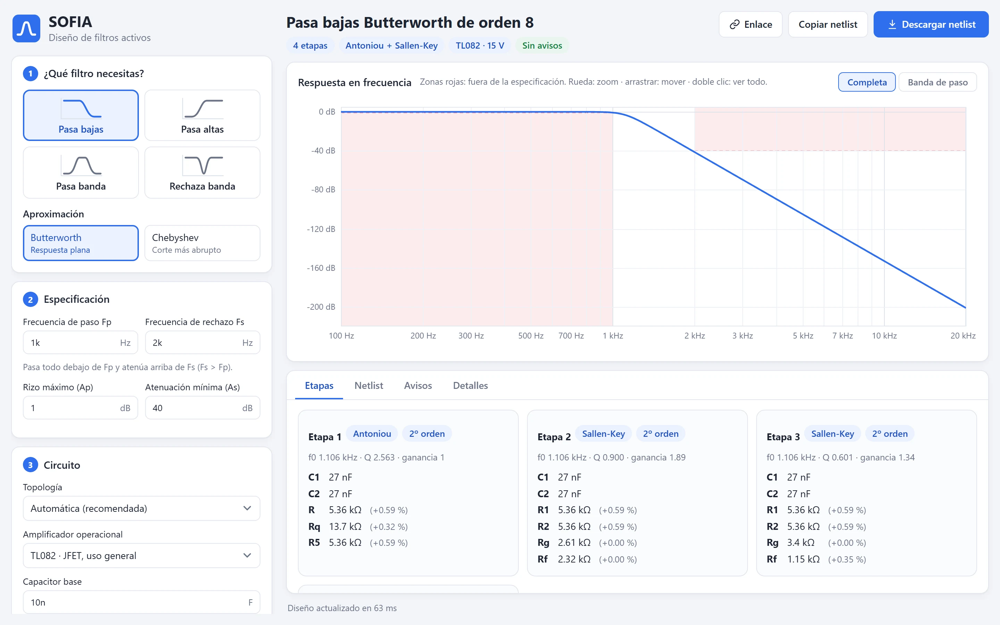
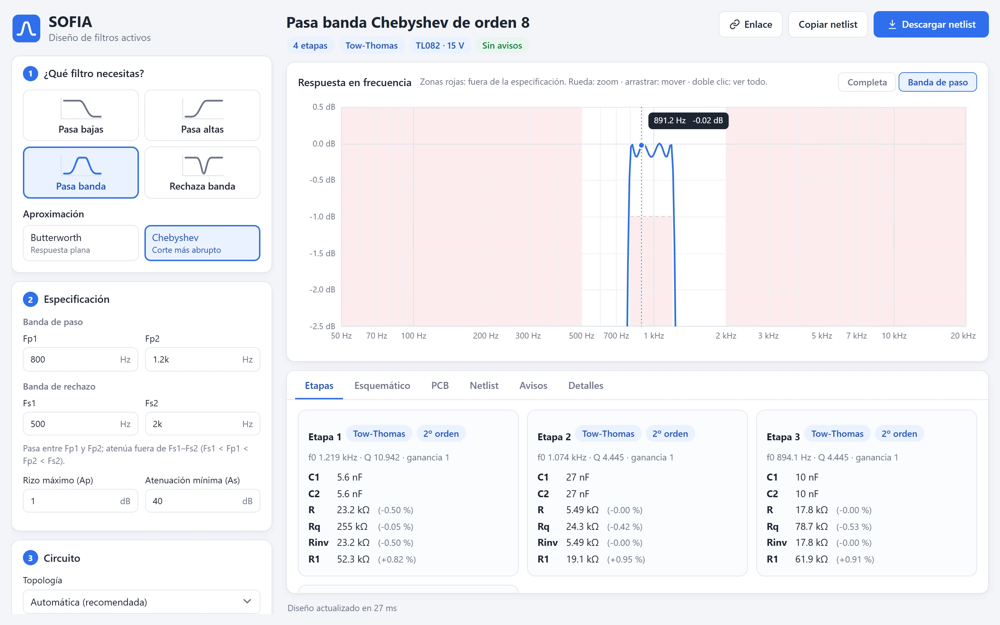
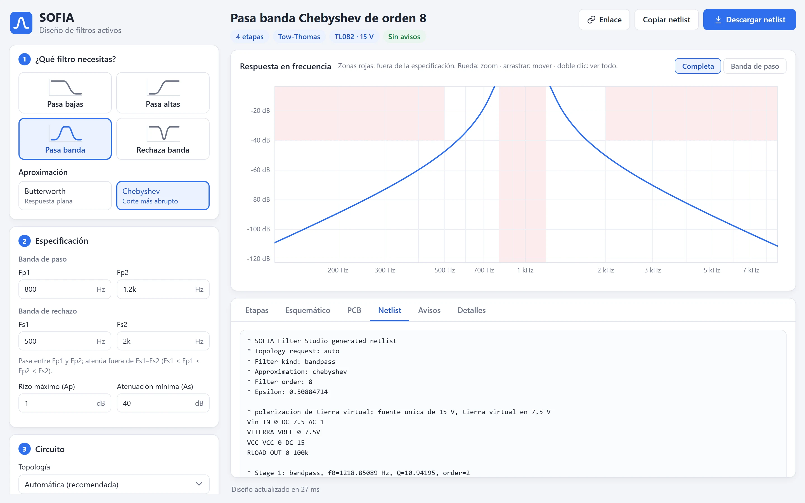
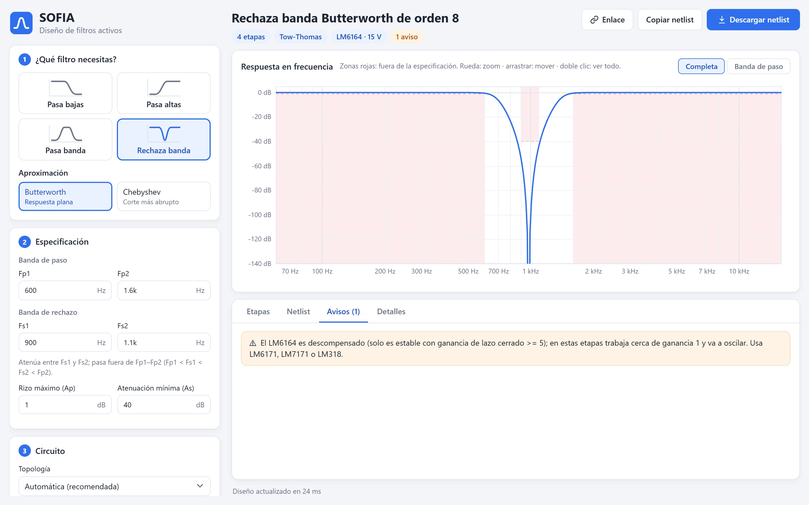
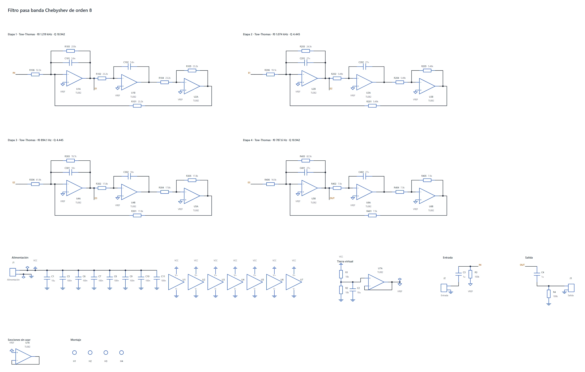
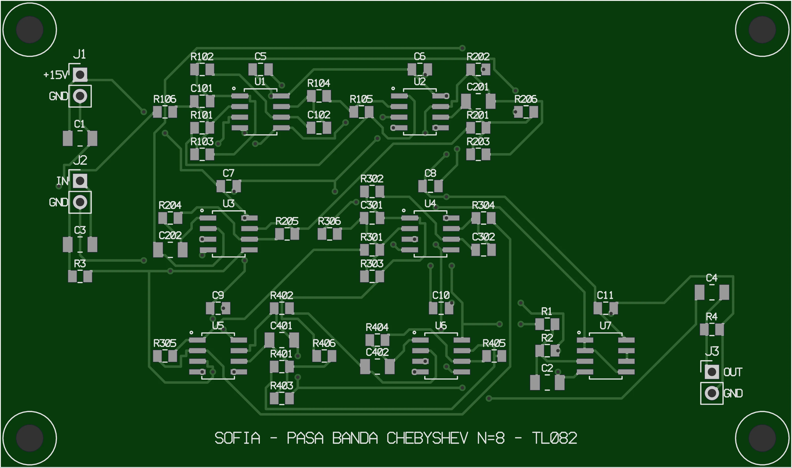

SOFIA Filter Studio
Manual de uso
Diseño de filtros activos Butterworth y Chebyshev, de la especificación al netlist SPICE.

Diseño de filtros activos Butterworth y Chebyshev, de la especificación al netlist SPICE.
SOFIA Filter Studio diseña filtros activos a partir de su especificación. Le das el tipo de filtro, las frecuencias y cuánto rizo y atenuación aceptas, y SOFIA:
Es una versión en Python del programa SOFIA original. El cálculo se verificó simulando en SPICE: con resistencias E96 y el modelo real del TL082, las 40 combinaciones de tipo de filtro, aproximación y topología cumplen la especificación.
| Versión | Cómo se abre | Necesita |
|---|---|---|
| Navegador | romeruu-dev.github.io/SOFIA/app | Internet la primera vez (descarga unos 6 MB). Funciona en computadora y celular. |
| Windows | SOFIA-Filter-Studio.exe, en la sección Releases del repositorio | Nada: es un solo archivo y funciona sin internet. |
| Python | sofia-gui o sofia (línea de comandos) | Python 3.11 o más reciente; la ventana usa PySide6. |
Las tres versiones usan el mismo motor de cálculo y dan exactamente los mismos resultados. Este manual muestra la versión del navegador; la de escritorio tiene la misma pantalla, con Guardar netlist… en lugar de Descargar netlist.
A la izquierda está lo que pides; a la derecha, lo que SOFIA diseña. Todo se recalcula al momento.

1 2 3 4 5 6 7 8Como ejemplo diseñaremos un pasa bajas que deje pasar hasta 1 kHz con no más de 1 dB de caída, y que atenúe al menos 40 dB a partir de 2 kHz. Son los valores con los que abre la app.
| Tipo | Qué hace | Frecuencias que pide |
|---|---|---|
| Pasa bajas | Pasa lo que está debajo de Fp y atenúa arriba de Fs. | Fp < Fs |
| Pasa altas | Pasa lo que está arriba de Fp y atenúa debajo de Fs. | Fs < Fp |
| Pasa banda | Pasa entre Fp1 y Fp2; atenúa fuera de Fs1–Fs2. | Fs1 < Fp1 < Fp2 < Fs2 |
| Rechaza banda | Atenúa entre Fs1 y Fs2; pasa fuera de Fp1–Fp2. | Fp1 < Fs1 < Fs2 < Fp2 |
Butterworth tiene la banda de paso más plana posible. Chebyshev permite un rizo dentro de la banda de paso a cambio de un corte más abrupto: para la misma especificación suele necesitar menos etapas. En el ejemplo, Butterworth pide orden 8 y Chebyshev orden 5.
Al cambiar entre pasa bajas y pasa altas, SOFIA intercambia Fp y Fs para que la especificación siga siendo válida. Los filtros de banda recuerdan sus propias frecuencias.
| Campo | Significado |
|---|---|
| Fp (Fp1, Fp2) | Borde de la banda de paso: hasta ahí la caída no puede pasar del rizo máximo. |
| Fs (Fs1, Fs2) | Borde de la banda de rechazo: desde ahí la atenuación debe ser al menos As. |
| Rizo máximo (Ap) | Caída máxima permitida dentro de la banda de paso, en dB (por ejemplo 1 dB). |
| Atenuación mínima (As) | Atenuación exigida en la banda de rechazo, en dB (por ejemplo 40 dB). Debe ser mayor que Ap. |
Los campos aceptan notación de ingeniería, con punto o coma decimal y con o sin la unidad:
| Prefijo | p | n | u o µ | m | k | M o meg |
|---|---|---|---|---|---|---|
| Multiplica por | 10−12 | 10−9 | 10−6 | 10−3 | 103 | 106 |
Ejemplos válidos: 1k, 1.5k, 2 kHz, 10n, 0,1u,
1e-8. Si algo no se entiende, el campo se marca en rojo y arriba aparece qué corregir.
Topología. Con Automática (recomendada), SOFIA elige la de cada etapa según su Q y el tipo de filtro. Puedes forzar una; si no puede realizar alguna etapa, esa etapa usa Tow-Thomas y aparece un aviso.
| Topología | Opamps por etapa | La automática la usa para |
|---|---|---|
| Sallen-Key | 1 | Pasa bajas y pasa altas con Q ≤ 1.2, y la etapa de primer orden. |
| Antoniou (GIC) | 3 | Pasa bajas y pasa altas con Q entre 1.2 y 4. |
| MFB (realimentación múltiple) | 1 | Pasa banda con Q ≤ 3. |
| Tow-Thomas | 3 | Rechaza banda, pasa banda con Q > 3 y cualquier etapa con Q > 4. |
Amplificador operacional. Cada modelo trae su macro-modelo SPICE, que se copia dentro del netlist.
| Opamp | Alimentación | Comentario |
|---|---|---|
| TL082 | 15 V | Entrada JFET, uso general. Buena opción para audio. |
| LM324 | 5 V | El único que funciona con 5 V. Para filtros de baja frecuencia. |
| uA741 | 15 V | Clásico; ancho de banda bajo. |
| LM318 | 15 V | Más rápido que el TL082. |
| LM7171, LM6171 | 15 V | Alta velocidad (100–200 MHz). Con MFB, Tow-Thomas o Antoniou la app avisa que conviene otra opción. |
| LM6164, LM6165 | 15 V | Descompensados: solo son estables con ganancia ≥ 5 y ≥ 25. En estas etapas oscilan; la app lo avisa. |
Todos los netlists usan una sola fuente con tierra virtual a la mitad: 15 V con tierra virtual en 7.5 V (LM324: 5 V y 2.5 V).
Capacitor base. Es el punto de partida (10 nF por defecto). Con la opción Ajustar el capacitor de cada etapa activada, SOFIA prueba los valores E12 cercanos y elige, para cada etapa, el que deja las resistencias más cerca de valores comerciales y en un rango práctico.
Opciones avanzadas.
Arriba aparece el filtro diseñado (por ejemplo Pasa bajas Butterworth de orden 8) y unas etiquetas con el número de etapas, las topologías usadas, el opamp con su alimentación y cuántos avisos hay. Sin avisos en verde significa que no se detectó ningún problema práctico.
La curva azul es la respuesta del diseño. Las zonas rojas son lo que la especificación prohíbe: debajo de −Ap en la banda de paso y arriba de −As en la banda de rechazo. Si la curva no toca ninguna zona roja, el diseño cumple.
| Para… | Con mouse | En celular o tableta |
|---|---|---|
| Acercar o alejar | Rueda, alrededor del cursor | Pellizcar con dos dedos |
| Zoom solo en dB | Shift + rueda | — |
| Zoom solo en frecuencia | Ctrl + rueda | — |
| Mover la vista | Arrastrar | Arrastrar con un dedo |
| Leer un punto | Pasar el cursor sobre la curva | Tocar la gráfica |
| Volver a ver todo | Doble clic | Botón Completa |

Cada tarjeta es una etapa del circuito, en el orden en que se conectan (la salida de la etapa 1 entra a la 2, y así). Muestra su topología, su orden, la frecuencia natural f0, el Q y la ganancia, y la lista de componentes: los capacitores y cada resistor con su valor comercial y, entre paréntesis, cuánto se aleja del valor ideal calculado.
Es el circuito completo en formato SPICE. Descargar netlist lo guarda como archivo .cir con
un nombre que describe el filtro; Copiar netlist lo copia al portapapeles. Contiene:
Vin (entrada, con la tierra virtual de DC y 1 V de AC), VTIERRA y VCC, y una carga de 100 kΩ en la salida OUT;.nodeset, que ayuda a SPICE a encontrar el punto de operación correcto, y el barrido .ac que cubre de una década abajo a una década arriba de las frecuencias del filtro.
Explican lo que puede fallar al armar o simular el circuito y qué hacer. La pestaña muestra cuántos hay. La sección 8 los lista todos.

Muestra el orden; el rizo y la atenuación que realmente tiene el diseño, con su margen frente a lo que pediste; épsilon; la selectividad; la alimentación; los opamps adecuados para esa frecuencia, y los polos en rad/s. En filtros de banda también aparecen la frecuencia central y el ancho de banda.
El orden se redondea hacia arriba, así que casi siempre sobra selectividad. SOFIA la reparte como margen entre las dos bandas: por ejemplo, el pasa bajas del ejemplo queda con 0.787 dB de rizo (pediste 1 dB) y 41.15 dB de atenuación (pediste 40 dB). Ese margen absorbe el redondeo de los componentes.
En la versión del navegador, el botón Enlace copia un link con el tipo de filtro, la especificación y el circuito. Quien lo abra verá exactamente el mismo diseño. Sirve para mandar un ejercicio o pedir una revisión.
.cir.V(out).ngspice filtro.cir run plot vdb(out)
Las pestañas Esquemático y PCB convierten el diseño en un circuito listo para armar. Antes de abrirlas elige en Circuito › Componentes de la placa si quieres partes SMD (resistencias 0805, opamps SOIC) o through-hole (resistencias axiales, capacitores de película, opamps DIP).
Muestra cada etapa con su topología y, abajo, lo que la placa necesita además del filtro: el conector de alimentación con sus capacitores de desacoplo, la tierra virtual (divisor y seguidor), el acoplamiento de entrada y de salida, las secciones de opamp que sobran conectadas como seguidores y los barrenos de montaje. Las referencias siguen la etapa (R101 es de la etapa 1) y las etiquetas E1, E2… unen una etapa con la siguiente.
KiCad descarga un proyecto de KiCad en un ZIP: descomprímelo y abre el archivo .kicad_pro
con KiCad 8 o más reciente. Trae el esquemático y su biblioteca de símbolos, así que el ERC de KiCad sale limpio.
SVG lo guarda como imagen, y Materiales (CSV) descarga la lista de componentes agrupada por valor,
con cantidades, referencias, descripción y huella. El CSV abre directo en Excel.

Al abrir la pestaña PCB, SOFIA coloca los componentes (cada opamp con sus resistencias y capacitores cerca de los pines que usan) y rutea las pistas automáticamente en dos capas, con un plano de tierra en la capa de abajo. Tarda unos segundos. Arriba aparecen el tamaño, el número de vías y si el ruteo quedó completo y sin errores de reglas; los botones Arriba y Abajo cambian la cara que se ve.
| Regla | Valor |
|---|---|
| Capas | 2, FR-4 de 1.6 mm, plano de tierra en la capa inferior |
| Pista mínima / separación | 0.3 mm / 0.25 mm |
| Vías | 0.8 mm de diámetro, barreno de 0.4 mm |
| Montaje | 4 barrenos M3 en las esquinas |
.kicad_pro y, en la placa, presiona B para rellenar el plano de tierra.
Las reglas se revisan sobre el cobre real antes de mostrar la placa, y el proyecto pasa el ERC y el DRC de KiCad sin errores. Aun así, revísala en KiCad antes de mandarla a fabricar: es tu circuito.
Aparecen en una franja roja arriba de la gráfica; el campo con el problema se marca en rojo.
| Mensaje | Qué hacer |
|---|---|
| … no es un número válido | Revisa el campo: solo número, prefijo (k, n…) y, si quieres, la unidad. |
| unidad '…' no reconocida | La unidad no corresponde al campo (por ejemplo F en una frecuencia). |
| En un pasa bajas, Fs debe ser mayor que Fp | Fs es donde empieza la atenuación: debe quedar arriba de Fp (en pasa altas, abajo). |
| Se necesita Fs1 < Fp1 < Fp2 < Fs2 | En pasa banda, la banda de paso va dentro de la de rechazo (en rechaza banda, al revés). |
| La atenuación mínima debe ser mayor que el rizo máximo | As tiene que ser mayor que Ap. |
| … debe ser mayor que cero | Frecuencias, rizo y capacitor deben ser positivos. |
| Aviso | Qué significa |
|---|---|
| El LM6164 / LM6165 es descompensado… | Va a oscilar con las ganancias de estas etapas. Usa LM6171, LM7171 o LM318. |
| El LM7171 / LM6171 es un opamp de 100-200 MHz… | Con MFB, Tow-Thomas o Antoniou su simulación transitoria no se estabiliza. Usa Sallen-Key o un opamp más lento. |
| Etapas Sallen-Key con Q mayor a 10 | Muy sensibles a la tolerancia. Tow-Thomas o MFB son más robustas. |
| … no puede realizar una etapa …; esta etapa usa Tow-Thomas | La topología que forzaste no sirve para ese tipo de etapa; SOFIA la cambió solo en esa etapa. |
| La etapa N redondea resistencias hasta X % | La serie elegida queda lejos de los valores ideales. Usa E96. |
| Resistencias menores a 10 Ω o mayores a 1 MΩ | Cambia el capacitor base al valor que sugiere el aviso. |
| La corriente de polarización … agrega unos X mV de offset | Resistencias grandes con un opamp de corriente de entrada alta. Un capacitor base más grande lo reduce. |
| Q muy sensible, ganancia recortada o limitada | La etapa no alcanza exactamente el Q pedido con esa topología; prueba Automática o Tow-Thomas. |
Descarga SOFIA-Filter-Studio.exe de la sección Releases del repositorio y ábrelo con doble
clic; no se instala. La ventana es la misma que la del navegador. Atajos: Ctrl+S guarda el netlist y
Ctrl+Shift+C lo copia.
El mismo .exe funciona como línea de comandos si le pasas opciones; como no abre consola, usa --netlist-out para obtener el archivo. En Python, después de
pip install -e ".[gui]", los comandos son sofia y sofia-gui:
sofia --kind lowpass --approx butterworth --fp 1000 --fs 2000 \
--ap 1 --as 40 --topology auto --opamp TL082 --netlist-out filtro.cir
| Opción | Valores |
|---|---|
--kind | lowpass, highpass, bandpass, bandstop |
--approx | butterworth, chebyshev |
--fp --fs | Bordes en Hz (pasa bajas y pasa altas) |
--fp1 --fp2 --fs1 --fs2 | Bordes en Hz (filtros de banda) |
--ap --as | Rizo máximo y atenuación mínima en dB |
--topology | auto, sallen_key, mfb, tow_thomas, antoniou (por defecto sallen_key) |
--opamp | TL082, LM324, uA741, LM318, LM7171, LM6171, LM6164, LM6165 |
--cap | Capacitor base en faradios (por defecto 1e-8) |
--resistor-series | E96, E48, E24, E12 (por defecto E96) |
--netlist-out | Archivo donde guardar el netlist |
--inline-model | Copia el modelo del opamp dentro del netlist (el .exe siempre lo hace) |
En la línea de comandos los valores van en notación científica (1e-8), no con prefijos. El
resultado completo (orden, polos, etapas y componentes) se imprime en JSON.